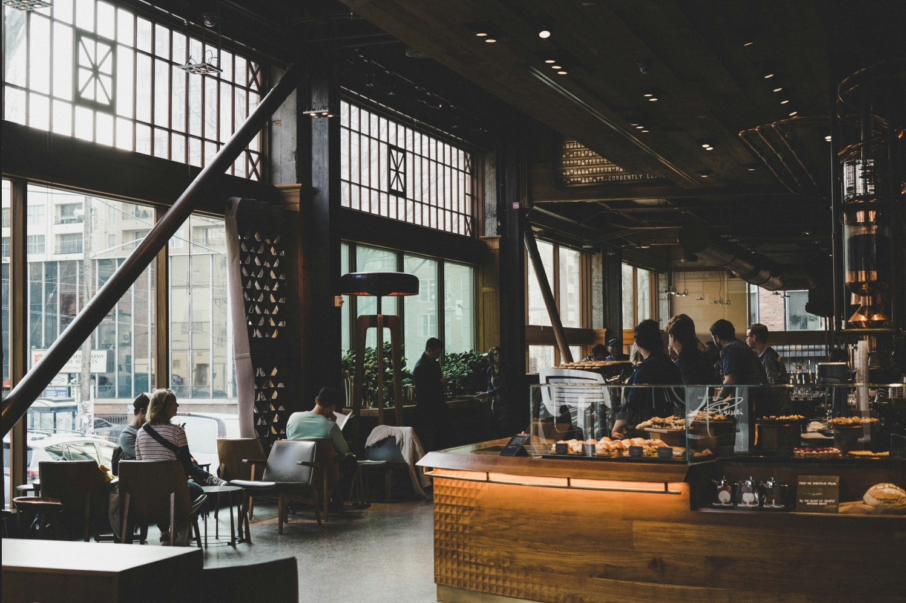

Sobre Nosotros
Nuestra Historia
Fundada en 2010, Cafeteria Express nacio del sueño de compartir el autentico sabor del cafe cubano con un toque contemporáneo. Desde entonces, hemos servido más de 100,000 tazas a clientes que hoy consideramos familia.
Nuestro compromiso es con el producto local, el trato cercano y un ambiente donde cada visitante se sienta en casa.

Nuestros Valores
- Pasion por el cafe de especialidad
- Compromiso con productores locales
- Atencion calida y personalizada
- Sostenibilidad y respeto por el medio ambiente
- Innovacion constante en nuestras recetas